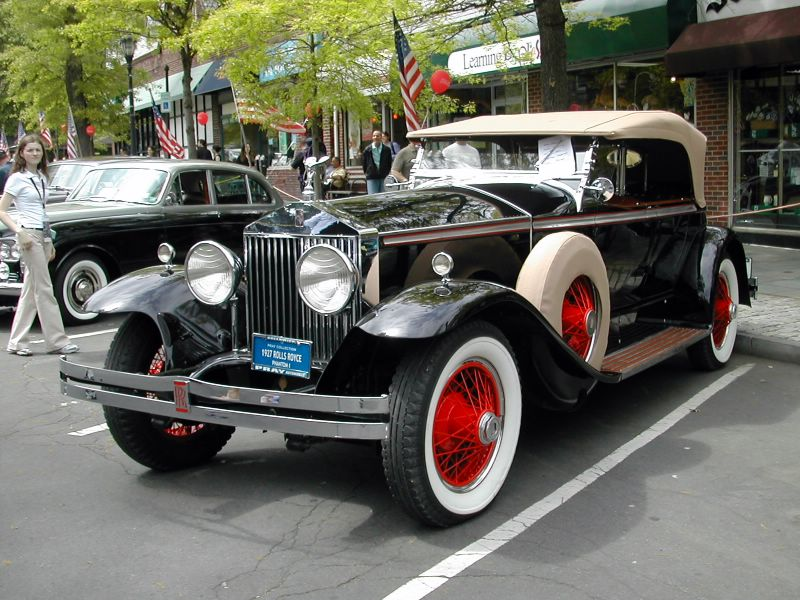

Rolls-Royce Limited was created over a famous lunch in May 1904. Henry Royce, a successful engineer, struck a deal with Charles Rolls, owner of one of the first car dealerships. The rest is history. The ensuing series of two, three, four and six cylinder cars broke the mould for engineering and craftsmanship. The Silver Ghost, launched in 1907, was a car of legendary smoothness that completed a 14,371 mile virtually non-stop run, creating 'the best car in the world' legend.
 Shelby Cobra